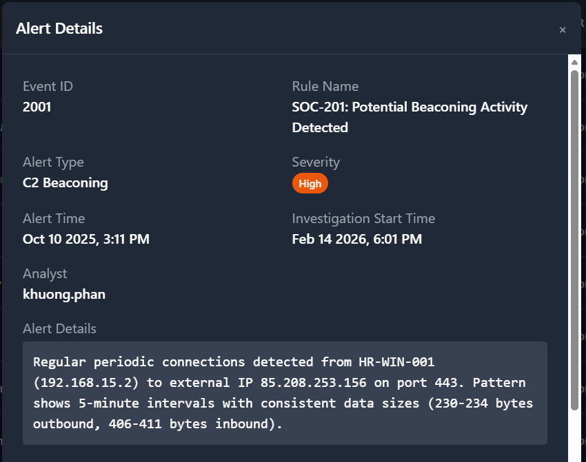
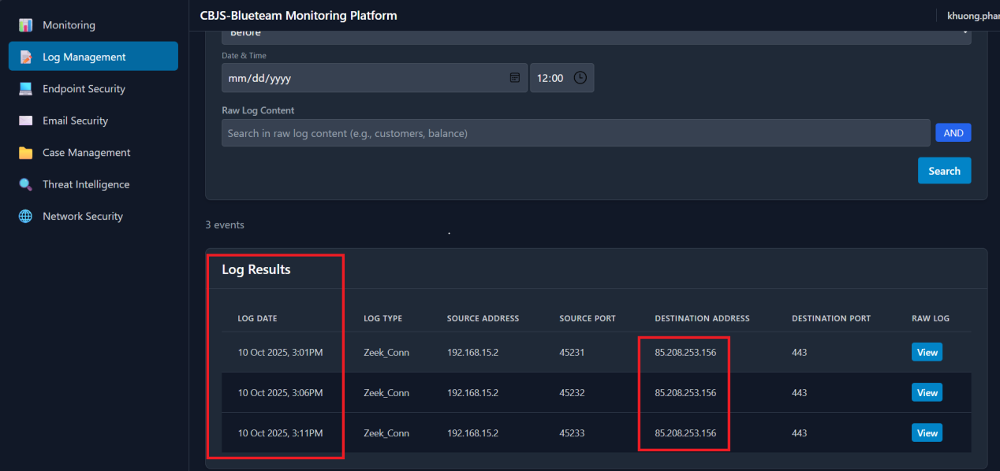
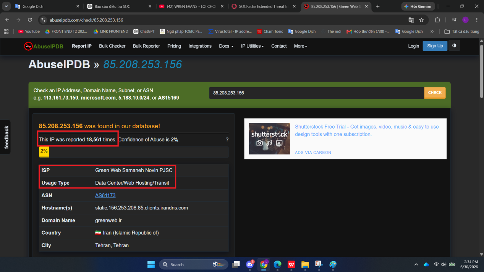
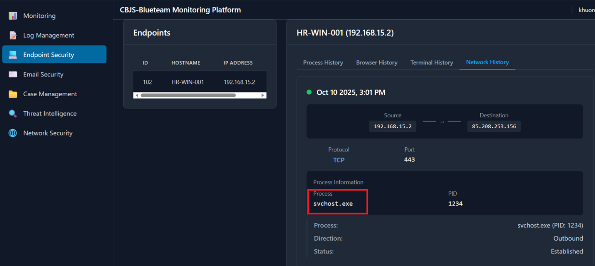

SOC-201: Potential Beaconing Activity Detected
SIEM phát hiện HR-WIN-001 kết nối định kỳ tới external IP 85.208.253.156 qua TCP/443 với chu kỳ 5 phút và byte size ổn định. Case được xử lý như suspicious outbound C2-like behavior, cần containment và escalation dựa trên network pattern, threat intelligence và endpoint evidence.
Executive Summary
SIEM phát hiện máy trạm HR-WIN-001 (192.168.15.2) liên tục kết nối tới external IP 85.208.253.156 qua TCP/443. Kết nối xuất hiện đều mỗi 5 phút, outbound size khoảng 230–234 bytes và inbound size khoảng 406–411 bytes.
Pattern đều về thời gian và kích thước dữ liệu phù hợp với dấu hiệu ban đầu của C2 beaconing. Kết hợp với IP reputation có lịch sử abuse và endpoint evidence cho thấy svchost.exe tạo outbound connection, case cần được xử lý như suspicious C2-like activity: isolate host, block destination, collect endpoint artifact và escalate.

Alert Context & IOCs
| Field | Value | Analyst note |
|---|---|---|
| Event ID | 2001 | SOC-201: Potential Beaconing Activity Detected. |
| Source host | HR-WIN-001 · 192.168.15.2 | Máy nội bộ thuộc bộ phận HR, có khả năng chứa dữ liệu nhạy cảm. |
| Destination | 85.208.253.156 · TCP/443 | External IP qua HTTPS, cần kiểm tra TI và firewall/proxy logs. |
| Pattern | 5-minute interval; stable byte size | Dấu hiệu beaconing cần ưu tiên cao. |
| Process | svchost.exe · PID 1234 | Cần xác minh path, signer, command line và parent process. |
Risk Assessment
- Port 443 thường được phép đi ra Internet nên có thể bị lạm dụng để che giấu C2 traffic.
- Interval 5 phút và byte size ổn định không giống browsing người dùng thông thường.
- Source host HR-WIN-001 có rủi ro dữ liệu cao hơn vì thuộc nhóm nhân sự.
- Có chênh lệch giữa alert time và investigation start time; cần kiểm tra retention và timestamp source khi vận hành thật.
Evidence Collected
| Evidence source | Observed evidence | Analyst value | Assessment |
|---|---|---|---|
| SIEM alert | Kết nối ra 85.208.253.156 qua 443, interval 5 phút. | Xác định behavior có tính chu kỳ. | Suspicious beaconing pattern. |
| Log management | Nhiều event lặp lại trong cùng time window. | Xác nhận pattern không phải event đơn lẻ. | High confidence anomaly. |
| Threat intelligence | IP 85.208.253.156 có lịch sử bị report abuse trong case evidence. | Tăng rủi ro đối với destination. | Block candidate. |
| Endpoint network history | svchost.exe PID 1234 tạo outbound connection tới destination IP. | Chuyển từ network alert sang endpoint triage. | Cần collect hash/path/signature. |



Investigation Workflow
- Validate timestamp, source host, destination IP, protocol, port và byte-size pattern.
- Kiểm tra log management để xác nhận interval 5 phút có lặp lại nhiều lần.
- Tra cứu external IP trên threat-intelligence sources và ghi confidence.
- Pivot sang endpoint network history để xác định process/PID tạo kết nối.
- Kiểm tra scope: hunt IP 85.208.253.156 trên proxy/firewall/DNS để biết có host nội bộ khác liên quan không.
- Chuẩn bị escalation package gồm IOC, timeline, process evidence và recommended containment.
Final Assessment
Suspicious C2-like Beaconing · Escalation Required
Reason: Network pattern có chu kỳ đều, byte size ổn định, destination IP có reputation xấu trong case evidence và endpoint cho thấy process tạo outbound connection. Chưa đủ dữ liệu để đặt tên malware family, nhưng đủ để xử lý theo quy trình containment.
Response Actions
- Isolate HR-WIN-001 khỏi mạng sản xuất để ngăn traffic outbound tiếp tục.
- Block hoặc sinkhole destination IP 85.208.253.156 tại firewall/proxy trong khi điều tra.
- Collect endpoint artifacts: process path, hash, command line, parent process, signer, autoruns, scheduled tasks và recent files.
- Hunt cùng IOC trên toàn bộ môi trường để xác định có lateral spread hoặc host khác beaconing không.
- Escalate sang Tier 2/Incident Response kèm timeline, screenshots và IOC list.